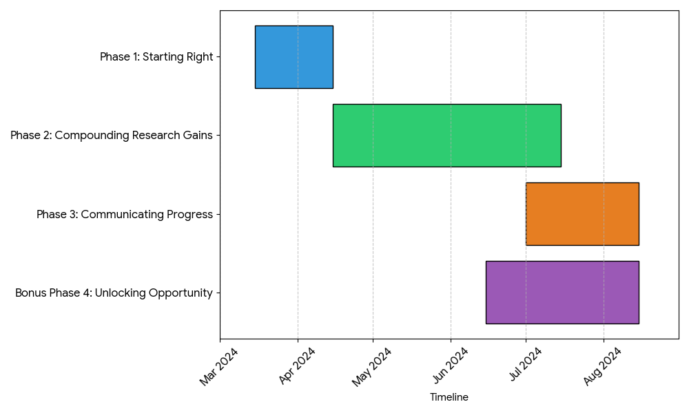

MSc Project Guide
The following guide has been put together to help you get the most out of your MSc research project. There are many different ways to succeed in scientific research and the tips & tricks shared here are what I have learnt through my own journey so far. Note, this is not an exhaustive or the 'only' approach, please adapt it to suit your own learning & research style.
Three Key Goals
What is the point of your MSc Research Project? I believe it is to achieve the following 3 goals:
- Gain real world research experience
- Enhance & hone your skill set
- Launch your next career step.
To get the most out of this MSc project you should take it not only as an opportunity to gain hands on research experience, but use it as a stepping stone, honing and enhancing skills which you need to transition to your next career step.
What to expect? This is an independent research project, you are in the driving seat with the ability to shape it as you see fit. My role as supervisor is to guide and support you through this process to help you succeed (More on this later!).
Timeline
- Project Kick Off: Monday 16th of March
- Assessed Presentation: 22-24th of June
- Draft Dissertation Submission & Feedback: 4-8th of August.
- Final Dissertation Deadline: 22nd of August 2026
The dissertation should be no more than 10,000 words and the total duration of the project is ~5.5 months
Support & Weekly Meetings
| Day | Activity |
|---|---|
| Mondays | Brainstorm a game plan for the week ahead together. |
| Fridays | Prepare a few slides (simple figures) to highlight your progress from the week. Discuss progress made and solve any problems encountered together. |
Do not hesitate to ask for help! The best mechanism to do this will be via Teams or Email. Also, if you are ever uncertain about any aspect of the project please ask for clarification.
Do not hesitate to put ideas forward and back yourself. If you have an idea which you would like to incorporate into the research project do not hesitate to put this forward! I most certainly do not have the monopoly on good ideas as a supervisor, and the best way to make scientific progress is to voice ideas, discuss and test them together!
Nudge Me - If I do not respond within 24hrs, please do not take this as me ignoring you. Please send a reminder email / message! I am human and sometimes messages do slip through the cracks on busy days.
If you ever feel hesitant to ask for help because you worry it might be seen as a lack of ability, please know this is simply not true. After you’ve spent a reasonable amount of time on a problem, if you’re still stuck, ask as it’s far better to get unstuck quickly than lose productivity struggling in silence.
 If you feel like this, it’s definitely time to reach out!
If you feel like this, it’s definitely time to reach out!
Derisking The Research Process
To help you get the most out of your MSc project, I put together the following framework. This was created to help guide you through the process and provide some clarity of what is expected when.
Phase 1 (Starting Right)
1) Identify Aspirations Identify your own career aspirations (e.g. what you want to achieve in the next 3 years) and what next steps you are interested in (e.g. PhD, industry position, start-up, etc).
2) Foundation of Knowledge Understand the MSc project subject area & rationale behind the overarching hypothesis.
3) Overlapping Strategy. Identify overlaps (skills, domain knowledge, etc) behind your own aspirations and the MSc project subject area.
4) Objective Formulation. Formulate small achievable objectives that work towards addressing the overarching hypothesis whilst integrating key aspects identified in point 3.
5) Objective Ordering. Determine the order of each objective. What depends on what? What aspects can be completed independently to accelerate progress etc. Best thing is to draw this out as a simple flow chart.
6) Infrastructure Familiarise yourself with the infrastructure needed to complete the project. (Git, Apocrita, etc)
At the end of phase 1, you should have a game plan (e.g. list of achievable objectives (point 4) and rough order in which to complete them (point 5)) and be equipped with the fundamental skills and knowledge to achieve it.
Phase 2 (Compounding Research Gains)
With the game plan to hand it is time to get stuck into the research. The points below are generalisable so should be completed for each objective, as such Phase 2 is an iterative process.
7) Initial Workflow Exploration. Given the nature of the objective, identify what has already been done and published in high-impact journals to address the given need.
8) Identify Resources. As the saying goes, there is no point reinventing the wheel, so assess what existing tools, databases, etc, you can use to achieve the objective and linking with point (7) how you can justify their use. However, in some cases you may find nothing does exist and so you have to build from scratch. This is a good sign as it shows you are at the cutting edge of science and addressing an unmet need!
9) Start Small & Simple. Following steps 7 & 8, you should have a rough idea of what's needed to achieve the objective and how you are going to do it! The next thing is to put that in action in the smallest and simplest form first. This allows you to fail quickly, debug the process and overcome any issues as quickly as possible. At the end of this step you should have a validated & working workflow.
10) Scale Up. Once you have validated your workflow it's time to scale up and achieve the objective in full!
11) Document! Document! Document!. Across the entire Phase 2 process, you should be documenting what you are doing! Record your methods as you go (tool versions, scripts, pipelines, etc) as it makes life so much easier when you need to go back and check a workflow or write up your progress. Along the way try to make publication ready figures as you go! This not only helps you clarify your understanding but cements your knowledge. Also, it means when it comes to the assessed presentation that you have figures and methods ready to go!
12) Step Back & Assess. When working on any scientific problem it is very easy to get tunnel vision and fall down the rabbit hole. I strongly recommend at least once a week to step back and reflect on the progress made towards a given objective. Ask yourself, are you progressing at the rate you expected? Are you hitting any brick walls and why? Are you still achieving the core objective and have not fallen foul to project creep? Have you achieved the objective to a good enough standard to move onto the next, with regards to the overall game plan?
Phase 3 (Communicating Progress)
In the final two months of your project, you will transition into Phase 3 and focus on completing your dissertation. I cannot overstate the importance of this stage. Regardless of the career path you choose, the ability to clearly and effectively communicate the work you have undertaken is absolutely essential.
13) Consolidation. Now you can begin to pull everything together. By documenting your hard work completed in Phase 1 (Point 2) and Phase 2 (Point 11), the bulk of material for your introduction, methods and results sections should be ready to be pulled together and polished. Do this first!
14) Discussion Time. Once the introduction, methods and results sections are complete, it is time to get started on the discussion. Personally, I find this section the most enjoyable to write as you can reflect on the progress you have made and what you would do in the future given more time & resources.
15) Feedback. Submit your dissertation draft for review. Ideally, this should be done ~4 weeks before the deadline to give me enough time to review each section, provide feedback and to give yourself time to make any corrections necessary.
16) Refinements. Receive draft dissertation feedback, make any necessary changes & final polishing.
17) Submission. Submit ideally 48hrs before the deadline, celebrate & head to the pub early!
Bonus Phase 4 (Unlocking Opportunity)
18) Build your network. Throughout the project, keep an eye out for opportunities to expand your network, such as free events, seminars, and workshops that align with your long-term aspirations. Don't hesitate to reach out to people via email as well. As a student, this is one of the best times to do so: most people are happy to help and are unlikely to perceive you as a threat or assume any ulterior motive.
19) Look to the Future. In the latter half of your MSc project, set aside time to focus on applying for your next career step so you can transition smoothly after completing your degree. It's important to prioritise your future. While it can be tempting to keep pushing forward with the research, dedicating time to securing your next opportunity is often a far better investment.

Summary of Key Tips & Tricks
Below are some of the tips & tricks I have picked up along the way which work for me!
-
Create a Daily Progress Log. This does not have to be a fancy task management system, but a simple google doc which helps you keep track of your progress each day, in one place and write down your chain of thought / logic.
-
Make Report-Ready Figures as you go! This will help capture your progress and reduce the burden of report writing.
-
Be very aware of Project / Objective creep. It is easy to get carried away on interesting bits of research, however, don't lose focus.
-
Don't accumulate Technical Debt. Do it properly, do it right and do it once!
Wellbeing & Balance
-
Remember the MSc project is a marathon & not a sprint.
-
If you feel overwhelmed, try to break the problem down into small manageable tasks to regain and build momentum.
-
Impactful research is hard and the duration of this project is short. Progress may not be as fast as you anticipated. This does not affect your ability to pass; what does affect your ability is how well you evidence your scientific rationale and the effort you made to address the hypothesis and objectives established.